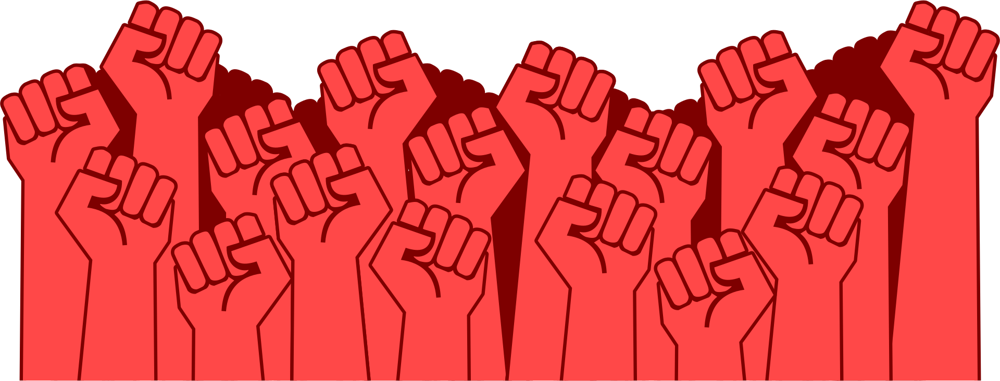

Heb je je ooit afgevraagd
wat er achter die schermen zit?
Ik heb erover nagedacht. Sterker nog, ik ben niet alleen bij het nadenken gebleven.
Als iemand die is opgegroeid in het digitale leven dat we het web noemen
noemen heb ik mijn hele leven in deze digitale wereld doorgebracht.
Juist daarom is het verbeteren van het web,
dat we tegenwoordig allemaal gebruiken en zelfs nodig hebben,
voor mij geen technische optimalisatie, maar een verbetering van de mensheid
en we zullen deze verbetering realiseren door Haubens onvoltooide strijd
tegen tech-libertariërs voor vrije internetgebruikers voort te zetten,
om Web1 terug te winnen dat werkelijk van ons is.
mijn h1
Toen het web voor het eerst werd gemaakt, werd het gezien als het gezamenlijke geheugen van de
mensheid:
een democratische wereld waarin kennis vrij gedeeld kon worden. Ik bewonder die visie van de
beginjaren.
Maar vandaag de dag, in het web waar ik doorheen beweeg en
waar ik ontwerp, moeten we voor toegang tot informatie
eerst gedwongen accepteren dat onze gegevens worden verzameld
en verwerkt. Daarna moeten we door
manipulatieve reclamelabyrinten gaan die speciaal voor ons zijn gemaakt met
behulp van diezelfde gegevens.
Dit vindt ik erg zorgwekkend!
Omdat ik als maker uit eerste hand ervaar dat het web zowel een snelle en praktische bibliotheek van
kennis kan zijn
als een middel om mensen te manipuleren. Ik kan niet zomaar toekijken hoe zo’n geweldig potentieel
wordt verspild
aan de eindeloze drang van grote bedrijven om steeds meer geld te verdienen.
De kwaliteit van onze digitale wereld heeft namelijk direct invloed op de toekomst van onze
samenleving.
Hoe schoner en vrijer het web is, hoe schoner en sterker het gezamenlijke bewustzijn van de mensheid
zal zijn.

Een web zonder overal advertenties, dat niet probeert onze gegevens af te pakken
en dat zijn bezoekers niet probeert te manipuleren, is voor mij meer dan alleen een plek om
informatie te
vinden.
Het is een van de grootste vormen van waarde en respect die we de mensheid kunnen geven.
Deze tekst is een digitale opstand tegen een systeem dat commercieel, verrot en steeds meer gemonopoliseerd is geraakt.
Wij, iedereen die deel uitmaakt van het web, verdienen veel beter dan het huidige systeem.
Het Web Is Geen Markt, Maar Een Gemeenschappelijke Ruimte
Lichtheid Is Geen Keuze, Maar Een Recht
Gegevens Zijn Van De Gebruiker En Zijn Privé
Niet Het Algoritme, Maar De Wil Zal Winnen
Deze digitale revolutie begint bij ons: bij jou, bij mij en bij alle gebruikers van het web die minderreclame en meer vrijheid willen.